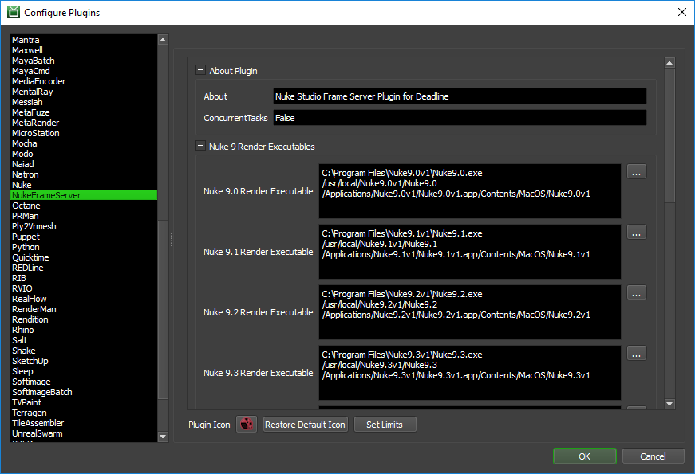

Nuke Frame Server¶
Reserving Workers For Frame Server Render¶
You can reserve Deadline Workers for a rendering over the Nuke Studio frame server from Nuke Studio by installing the integrated submission script, or you can reserve them from the Monitor. The instructions for installing the integrated submission script can be found further down this page. The Deadline Workers will create the specified number of Nuke Frame Server Workers processes on the machines in which they run.
Note: The machine submitting the Nuke Frame Server job cannot create Nuke Frame Server Workers.
To submit a Reserve Frame Server Workers Job from within Nuke Studio, select Submit to Deadline from the Thinkbox menu.
Note
As of Nuke 11.0, the Nuke/NukeX versions as well as Nuke Studio can now be used with Frame Server.
Submission Options¶
The general Deadline options are explained in the Job Submission documentation. The Nuke specific options are:
Host: The IP address or Host Name of the Master Machine that the frame server Workers will connect to. This machine is the machine that will start the actual Nuke render.
Port Number: The port number to use to connect to the Master Machine. Default is 5560. Worker must NOT run on the same machine as the Master Machine.
Worker Count: The number of workers that should be spawned on each Deadline Worker that is reserved. Each worker runs an instance of Nuke and renders independently of other workers.
Worker Threads: The number of threads each worker should use.
Worker Memory: The amount of memory to reserve for each worker.
Reserving From Inside Nuke Studio¶
It is required that you have Nuke Studio 9.0v3 or newer (skip Nuke 9.0v4 as it contains a Frame Server bug) or Nuke 11.0 onwards, installed in order to properly use the Frame Server with Deadline. After you’ve configured your submission options, press the Reserve Machines button to submit the Nuke Frame Server Job. The Job’s ID and Status will be tracked in the submitter, and as nodes pick up the Job, they will show up in the Reserved Machines list. Once you are happy with the server list you can start rendering or exporting over the frame server.
Note that the Nuke Frame Server process can sometimes take a little while to initialize. This means that a machine in the Reserved Machines list could have started the Nuke Frame Server process, but it’s not fully initialized yet. If this is the case, it’s probably best to wait a minute or so after the last server has shown up before starting the render.
After the render is finished, you can press Release Machines or close the submitter UI (Setup Frame Server Workers With Deadline) to mark the Frame Server Job as complete so that the render nodes can move on to another Job.
Note: Only one Deadline Worker per machine may pick up a Nuke Frame Server Job, as allowing multiple Workers on the same machine to try to bind to the same port would not work. Deadline will also fail a render if a Deadline Worker running on the Master Machine tries to pick up the Reserve Job, as it is already running an instance of the Frame Server and the same port binding conflict can occur.
Reserving From The Monitor¶
After you’ve configured your submission options, press the Submit button to submit the Nuke Frame Server Job. Note that this doesn’t start any rendering, it just allows the Nuke Frame Server to start up on nodes in the farm. Once you’re happy with the nodes that have picked up the Job, you can initiate the distributed render manually from within Nuke Studio.
After the distributed render has finished, remember to mark the Job as complete or delete it so that the nodes can move on to other Jobs.
Cross-Platform Rendering Considerations¶
In order to perform cross-platform rendering with Nuke/Nuke Studio, you must setup Mapped Paths so that Deadline can swap out Read Node and Write Node file paths where appropriate. You can access the Mapped Paths Setup in the Monitor while in power user mode by selecting Tools -> Configure Repository. You’ll find the Mapped Paths Setup in the list on the left.
Plugin Configuration¶
You can configure the Nuke Frame Server plugin settings from the Monitor. While in power user mode, select Tools -> Configure Plugins and select the NukeFrameServer plugin from the list on the left.
Note, if the executable supports a MAJOR.MINOR.REVISION (9.0.123) numbering system in its path, then you will need to configure the explicit exe path to the particular revision that you have installed on your machines. Deadline does not track every possible revision available or indeed where it might be custom installed to, so a studio should verify their exe paths are correct for each application version they choose to use with Deadline. Multiple exe paths can still be declared and the first one that is found on a particular Worker on a particular platform will be used from the exe list.
Render Executables
Nuke Executable: The path to the Nuke executable file used for rendering. Enter alternative paths on separate lines. Different executable paths can be configured for each version installed on your render nodes. Note that the versions supported are the MAJOR.MINOR (9.0 or 9.1) versions of Nuke. If you wish to run a particular REVISION of Nuke then you will need to change the actual exe path under 9.0v1 to actually point at say, the 9.0v8 version. We don’t directly support MAJOR.MINOR.REVISION’s of Nuke, but rather just the first two levels MAJOR.MINOR and leave the specific REVISION to a studio to control. Multiple exe paths can still be declared and the first one that is found on a Worker will be used from the exe list.
Licensing Options
Workers To Use Interactive License: A list of Workers that should use an interactive Nuke license instead of a render license. Use a , to separate multiple Worker names, for example: worker001,worker002,worker003
OFX Cache
Prepare OFX Cache Before Rendering: If enabled, Deadline will try to create the temporary ofxplugincache folder before rendering, which helps ensure that comps that use OFX plugins render properly.
Integrated Submission Script Setup¶
The following procedures describe how to install the integrated Nuke Frame Server submission script. This script allows for submitting Nuke Reserve Frame Server Workers Jobs to Deadline directly from within the Nuke/Nuke Studio editing GUI.
You can either run the Submitter installer or manually install the submission script.
Submitter Installer¶
Run the Submitter Installer located at
<Repository>/submission/Nuke/Installers.
Manual Installation¶
Copy the file:
[Repository]\submission\Nuke\Client\DeadlineNukeFrameServerClient.py to your .nuke user folder (~/.nuke or %USERPROFILE%\.nuke)
If menu.py does not exist in your .nuke user folder, copy
[Repository]\submission\Nuke\Client\menu.pyto your .nuke user folderIf menu.py does exist, then open it in a text editor and add the following lines of code:
#For Nuke Frame Server and Nuke Submission import DeadlineNukeClient menubar = nuke.menu("Nuke") tbmenu = menubar.addMenu("&Thinkbox") tbmenu.addCommand("Submit Nuke To Deadline", DeadlineNukeClient.main, "") #This is done to only add the Frame Server in Nuke/Nuke Studio. #Try-except is for older versions of Nuke. try: if nuke.env[ 'studio' ] or nuke.env[ 'NukeVersionMajor' ] >= 11: import DeadlineNukeFrameServerClient tbmenu.addCommand("Reserve Frame Server Slaves", DeadlineNukeFrameServerClient.main, "") except: pass
Verify Installation¶
The next time you launch Nuke/Nuke Studio, there should be a Thinkbox menu with the option to Reserve Frame Server Workers.
Custom Sanity Check¶
A CustomSanityChecks.py file can be created alongside the main ReserveFrameServerSlaves.py submission script (in [Repository]\submission\Nuke\Main), and will be evaluated if it exists. This script will let you set any of the initial properties in the submission script prior to displaying the submission window. You can also use it to run your own checks and display errors or warnings to the user. Here is a very simple example of what this script could look like:
import nuke
import DeadlineFRGlobals
def RunSanityCheck():
DeadlineFRGlobals.initDepartment = "The Best Department!"
DeadlineFRGlobals.initPriority = 33
DeadlineFRGlobals.initPort = 5570
nuke.message("This is a custom sanity check!")
return True
The DeadlineFRGlobals module can be found in the same folder as the ReserveFrameServerSlaves.py script mentioned above. It just contains the list of global variables that you can set, which are then used by the submission script to set the initial values in the submission dialog. Simply open DeadlineFRGlobals.py in a text editor to view the global variables.
Finally, if the RunSanityCheck method returns False, the submission will be cancelled.
FAQ¶
Which versions of Nuke are supported?
Nuke Studio 9.0v3 to 15.0 and Nuke/NukeX 11.0 to 16.0 are supported.
What Nuke license does Frame Server use?
Nuke Studio’s Frame Server uses by default a standard Nuke rendernode “-r” license. Note for every license of Nuke Studio you own, a number of Nuke render licenses are included from The Foundry. These licenses are intended to be used for ‘local’ Nuke Studio background rendering using Frame Server running locally. Deadline’s Frame Server Jobs are for when additional processing power is required by your local running instance of Nuke Studio and it’s Master Frame Server functionality. Note, in Deadline’s Nuke Frame Server plugin configuration section, you can also provide a list of Workers that should use an interactive Nuke license instead of a render license, albeit this is a somewhat expensive thing to do with your Nuke GUI licenses!
Can I run Frame Server via Deadline Worker on the Master Machine?
No. You won’t be able to run Frame Server via Deadline Worker on the same machine that is also acting as the Master Machine (the machine currently running your session of Nuke Studio). Deadline will fail a render if a Worker running on the Master Machine tries to pick up the Job, as it is already running an instance of the Frame Server and a port binding conflict will occur. You will need to use a different machine even for simple testing purposes.
If running multiple Deadline Workers, can I run a normal Nuke network rendering Job simultaneously with Nuke Frame Server Jobs?
Yes. You will want to consider using Deadline limits here to ensure you don’t blow your Nuke license budget. See our Limits documentation for how to implement limits for each of your software license needs. Ensure you use “Machine” as the “Usage Level” in your Limits configuration, to ensure only 1 x Nuke license is used by the one physical/virtual machine. Don’t forget to consider licensing implications for any 3rd party Nuke plugins such as Optical Flares you may be using.
How can I check if my Nuke Frame Server Workers are connected?
There is a python script on Nuke’s website which can be used in the Script Editor windows in Nuke Studio to see the connected Nuke Frame Server Workers.
Error Messages and Meanings¶
This is a collection of known Nuke Frame Server error messages and their meanings, as well as possible solutions. We want to keep this list as up to date as possible, so if you run into an error message that isn’t listed here, please visit the Thinkbox Help Centre and let us know.
workerapplication.py: error: no such option: –loglevelstream
Earlier versions of Nuke Studio 9.0 contained a few Frame Server bugs, which were solved in later point releases of Nuke. It is recommended to use the latest version of Nuke where possible or at least Nuke 9.0v5 if running across different platforms:
- Nuke 9.0v5
Foundry BUG ID 46790 - Using the Frame Server across platforms did not work as expected.
Foundry BUG ID 45420 - The path remap argument (–remap) did not work when mapping between Windows and macOS or Linux file systems.
- Nuke 9.0v8:
Foundry BUG ID 50296 - Frame Server: Error handling and reporting when worker processes don’t start has been improved.
Foundry BUG ID 42082 - The Frame Server process occasionally interfered with Nuke Studio’s responsiveness.

{kind=link}
{kind=link}
{kind=link}